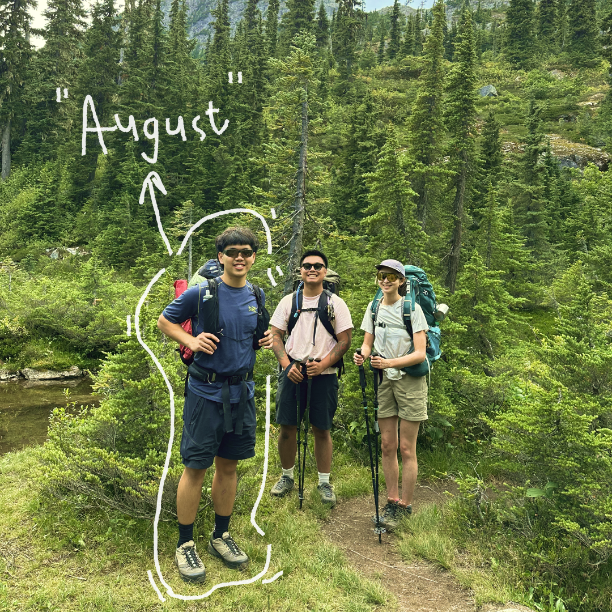

I am a multidisciplinary designer, video editor, animation enthusiast, and food-fueled thinker based in Vancouver.
I create thoughtful digital experiences through a blend of interface design, motion, and storytelling. From building wireframes and animating interactions, to editing video pitches and prototyping new ideas, I approach design with curiosity, intention, and attention to how people actually experience the work.
I am currently studying at SFU’s School of Interactive Arts & Technology (SIAT), where I have taken on roles in product design, speculative concept development, and multimedia storytelling. I have worked on projects ranging from smart application interfaces to budgeting apps, often jumping between Illustrator, Figma, After Effects, Photoshop and Visual Studio Code to bring ideas to life.
Right now, I am looking for co-op or internship opportunities where I can collaborate with designers, developers, or motion teams to shape meaningful work, while learning from those around me and contributing my voice and skills to the process.